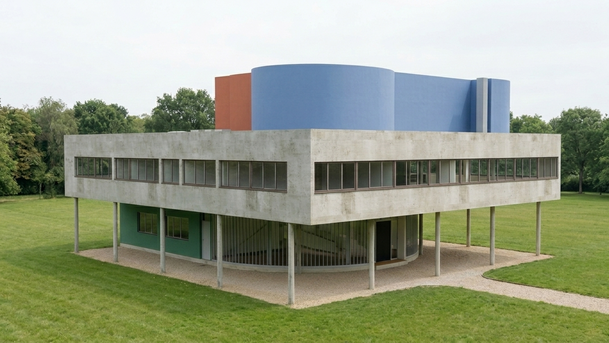
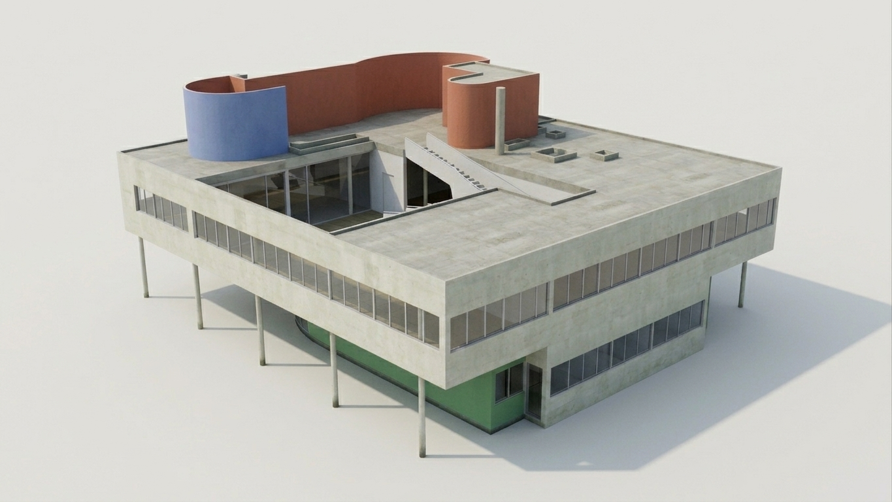
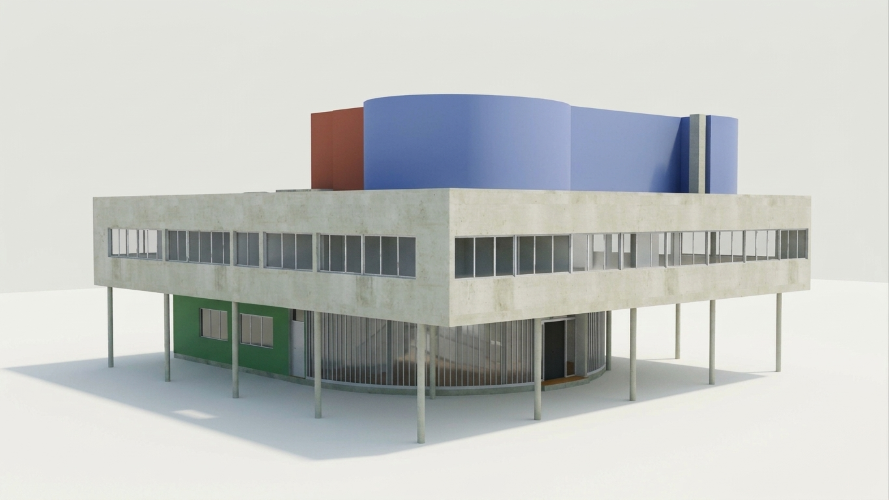
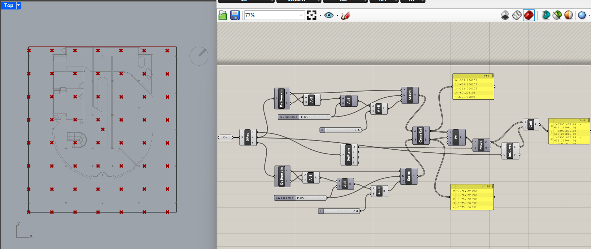
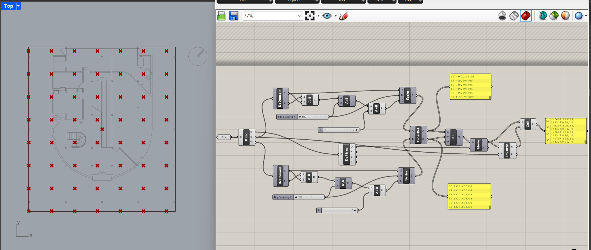
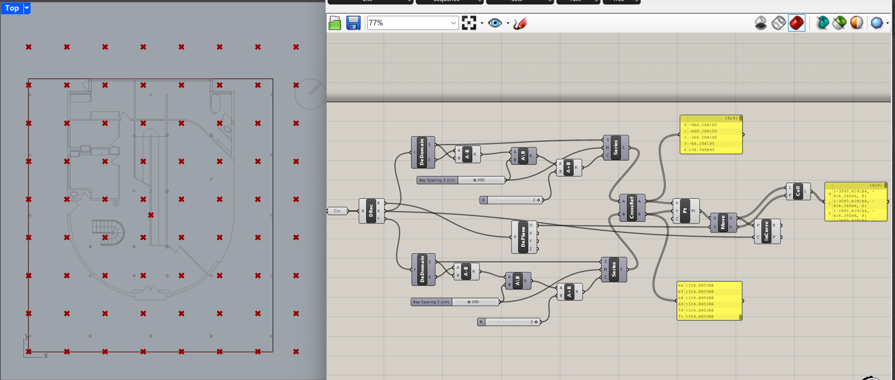

Villa Savoye — Structural Study
Rhino / 3D modellingStructural studyModernismOverview
A full 3D structural model of Le Corbusier's Villa Savoye (Poissy, 1929), modelled with minimal interior by following a YouTube tutorial, then pushed further. The project studies the building's structural system — pilotis, free façade, and roof garden — as a basis for extracting drawings and diagrams. Currently working on pulling presentation content from the model.
Gallery



Parametric Pilotis Grid Exercise
Building on the Villa Savoye model, I developed a Grasshopper definition to generate pilotis positions from a referenced rectangular footprint. Adjustable X and Y bay-spacing parameters control the grid, while a point-in-curve test removes positions outside the footprint.
Current result: 72 candidate points reduced to 56 points inside the footprint, using 300 cm spacing on both axes.
This study explores coordinate generation, geometric filtering and parametric control. The current definition assumes an axis-aligned rectangular footprint and does not evaluate structural adequacy.
Download Grasshopper definition · View study files and documentation




What to extract
- Axonometric + 3/4 perspective renders, 3–4 angles (consistent lighting & linework)
- Floor plans and one longitudinal + one cross section
- Close-ups: pilotis grid, ramp, roof garden, ribbon windows
- A turntable screen-recording exported as a GIF or short clip
Process notes
Credit: modelled following this tutorial — [paste YouTube link]
- What drove the model: overall dimensions, structural grid spacing, slab thickness
- What was deliberately left out (interior fit-out) and why
- Lessons → what the next version of the model would do differently